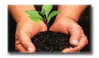

| |
CUIDADOS
AO PLANTAR UMA ÁRVORE NATIVA
Não
recomendamos o plantio de essências nativas em agrupamentos
homogêneos (uma só espécie), pois isso
resulta num sistema biológico vulnerável à pragas
e doênças. Esse tipo de plantio só é possível
com exóticas como Pinus e Eucalyptus pois seus inimigos
naturais ficaram em seus Países de origem.
Respeite a aptidão ecológica de cada espécie; existem plantas
nativas para todos os tipos de ambiente: solo seco, pedregoso, brejoso, clima
muito quente ou muito frio, região muito úmida ou muito seca.
Plantas próprias para solos muito úmidos ou brejosos, ou de terrenos
pedregosos crescem bem em solos normais, porém o inverso geralmente não é verdadeiro.
|
 |
| |
NATIVA
ou EXÓTICA? Se
você tem um
terreno com mata original, procure usar árvores nativas,
senão, use também exóticas, procurando não
misturar muito, ou seja, deixe partes nativas e partes exóticas. |
|
| |
PORTE
DA ÁRVORE: Informe-se
sobre a altura da árvore
e o diâmetro da copa, procure respeitar o tamanho da copa
para definir a distância entre uma árvore e outra.
Observe se não há fiação elétrica
por perto. |
|
| |
RAÍZES: Procure
cuidar para não plantar sobre
redes hidráulicas, pois as raízes natural-mente
buscarão água. |
|
| |
PLANTIO: Abra
uma cova com o tamanho mínimo de 30cm
x 30cm x 30cm. Se o solo for muito duro e solo não fértil,
aumente este tamanho para 40cm x 40cm x 60cm. Preencha esta cova
até a metade com terra adubada. Coloque sobre a terra
adubada, somente terra sem adubo. Encha o buraco com água.
Retire a embalagem da planta, procurando não desmanchar
o torrão e coloque na cova grudando bem no barro formado
pela água. Cuidado para não colocar próximo
ao adubo. Preencha o buraco com terra fértil sem adubo
e aperte bem com os pés. Nas partes externas do buraco
coloque um pouco mais de adubo, sem encostar na árvore
plantada. (Pode ser colocado até 1 kg de adubo químico
em uma árvore). Regue novamente e coloque tutoramento,
usando madeira resistente com altura igual a da árvores
plantada. Amarre a muda ao tutor. Adube novamente quando chegar
o verão e mais uma vez no meio do verão. |
|
|
|